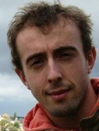

|  |
I am currently preparing a Ph.D. at the Centre National d'Études
Spatiales (French Space Agency) in Toulouse in France where
I am performing research on the processing of large remote sensing
images. My research focuses mainly on the scalability of
segmentation and classification algorithms for large multitemporal
series of high resolution images.
|
Anybody who comes to you and says he has a perfect language is either naïve or a salesman.
Bjarne Stroustrup, The C++ Programming Language.